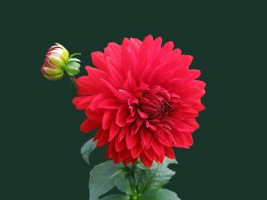

Dahlia is a genus of bushy, tuberous, herbaceous perennial plants native to Mexico and Central America. A member of the Compositae (also called Asteraceae) family of dicotyledonous plants, its garden relatives thus include the sunflower, daisy, chrysanthemum, and zinnia. There are 42 species of dahlia, with hybrids commonly grown as garden plants. Flower forms are variable, with one head per stem; these can be as small as 5 cm (2 in) diameter or up to 30 cm (1 ft) ("dinner plate").
CSS Media Queries
